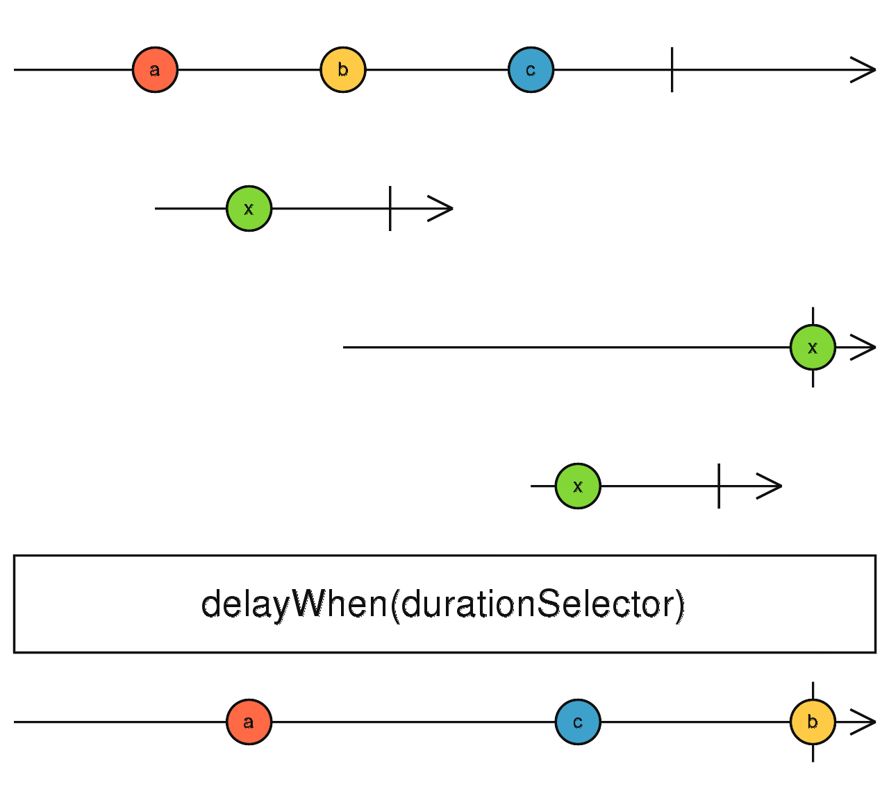

delayWhen
参数列表：
-
delayDurationSelector
function(value: T): Observable
一个函数，接收参数是source的value,返回一个Observable(duration observable).这个Observable一旦emit值或者complete,source的value才会发出
-
scheduler
Scheduler
(可选)Scheduler。
返回值: Observable <T[]>
珠宝图:

功能说明:
- delayWhen 从source获取值，然后根据另外一个duration Observable来决定何时emit这个value.
- 当source 发出一个value的时候，delayWhen调用delayDurationSelector，传入value,获取一个observable(duration Observable)
- 当duration Observable发出一个value或者complete的时候，source的value才会发出
备注事项:
- subscriptionDelay 参数不是必须的，如果提供了，则当subscriptionDelay发出一个value或者complete的时候，delayWhen才会去订阅Source,然后后续的流程和之前一样
点击不同按钮查看不同demo 代码效果